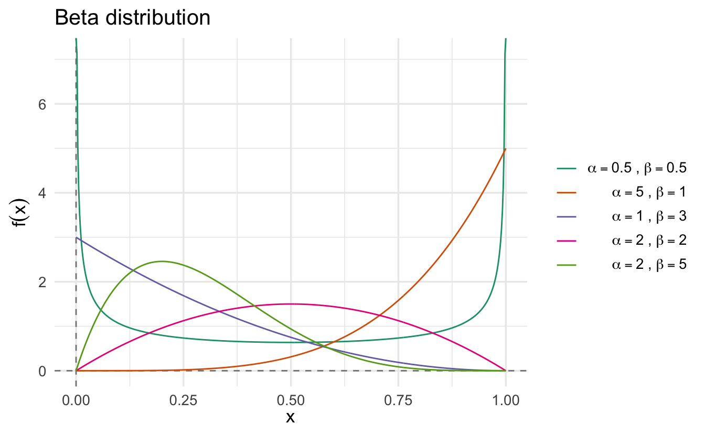

Lecture 14 Bayesian inference
Learning objectives
- Define the Bayesian philosophy and distinguish from frequentist inference
- Define core concepts for Bayesian methods
- Discuss the importance of simulation to estimate density functions
- Assess methods for defining priors
- Identify the strengths and weaknesses of Bayesian inference
14.1 Bayesian philosophy
Frequentist methods are the major methods we’ve employed thus far. The frequentist point of view is based on the following postulates:
- Probability refers to limiting relative frequencies. Probabilities are objective properties of the real world.
- Parameters are fixed, unknown constants. Because they are not fluctuating, no useful probability statements can be made about parameters.
- Statistical procedures should be designed to have well-defined long run frequency properties. For example, a 95% confidence interval should trap the true value of the parameter with limiting frequency at least 95 percent.
An alternative approach to inference is called Bayesian inference. The Bayesian approach is based on the following postulates:
- Probability describes degree of belief, not limiting frequency. As such, we can make probability statements about lots of things, not just data which are subject to random variables. For example, I might say “the probability that Donald Trump offended someone on November 25, 2018” is \(0.99\). This does not refer to any limiting frequency. It reflects my strength of belief that the proposition is true.
- We can make probability statements about parameters, even though they are fixed constants.
- We make inferences about a parameter \(\theta\) by producing a probability distribution for \(\theta\). Inferences, such as point estimates and interval estimates, may then be extracted from this distribution.
14.2 Bayes’ theorem
Bayes’ theorem is a fundamental component of both probability and statistics and is central to understanding the differences between frequentist and Bayesian inference. For two events \(A\) and \(B\), Bayes’ theorem states that:
\[\Pr(B|A) = \frac{\Pr(A|B) \times \Pr(B)}{\Pr(A)}\]
Bayes’ rule tells us how to invert conditional probabilities. That is, to find \(\Pr(B|A)\) from \(\Pr(A|B)\).
Example 14.1 (Coin tossing) Toss a coin 5 times. Let \(H_1 =\) “first toss is heads” and let \(H_A =\) “all 5 tosses are heads”. Therefore \(\Pr(H_1 | H_A) = 1\) (if all five tosses are heads, then the first one must by definition also be heads) and \(\Pr(H_A | H_1) = \frac{1}{16}\) (\(\frac{1}{2^4} = \frac{1}{16}\)).
However we can also use Bayes’ theorem to calculate \(\Pr(H_1 | H_A)\) using \(\Pr(H_A | H_1)\). The terms we need are:
- \(\Pr(H_A | H_1) = \frac{1}{16}\)
- \(\Pr(H_1) = \frac{1}{2}\)
- \(\Pr(H_A) = \frac{1}{32}\)
So,
\[\Pr(H_A | H_1) = \frac{\Pr(H_A | H_1) \times \Pr(H_1)}{\Pr(H_A)} = \frac{\frac{1}{16} \times \frac{1}{2}}{\frac{1}{32}} = 1\]
Example 14.2 (False positive fallacy) A test for a certain rare disease is assumed to be correct 95% of the time:
- If a person has the disease, then the test results are positive with probability \(0.95\)
- If the person does not have the disease, then the test results are negative with probability \(0.95\)
A random person drawn from a certain population has probability \(0.001\) of having the disease. Given that the person just tested positive, what is the probability of having the disease?
- \(A = {\text{person has the disease}}\)
- \(B = {\text{test result is positive for the disease}}\)
- \(\Pr(A) = 0.001\)
- \(\Pr(B | A) = 0.95\)
- \(\Pr(B | A = 0) = 0.05\)
\[ \begin{align} \Pr(\text{person has the disease} | \text{test is positive}) &= \Pr(A|B) \\ & = \frac{\Pr(A) \times \Pr(B|A)}{\Pr(B)} \\ & = \frac{\Pr(A) \times \Pr(B|A)}{\Pr(A) \times \Pr(B|A) + \Pr(A = 0) \times(B | A = 0)} \\ & = \frac{0.001 \times 0.95}{0.001 \times 0.95 + 0.999 \times 0.05} \\ & = 0.0187 \end{align} \]
Even though the test is fairly accurate, a person who has tested positive is still very unlikely (less than 2%) to have the disease. Because the base rate of the disease in the population is so low, the vast majority of people taking the test are healthy and even with an accurate test most of the positives will be healthy people.28
14.3 Bayesian method
Bayesian inference is usually carried out in the following way:
- Choose a probability density \(f(\theta)\) – called the prior distribution – that expresses our beliefs about a parameter \(\theta\) before we see any data.
- Choose a statistical model \(f(x|\theta)\) that reflects our beliefs about \(x\) given \(\theta\). Note that we now write this as \(f(x|\theta)\), not \(f(x; \theta)\).
- After observing data \(X_1, \ldots, X_n\), we update our beliefs and calculate the posterior distribution \(f(\theta | X_1, \ldots, X_n)\).
To calculate the posterior, suppose that \(\theta\) is discrete and that there is a single, discrete observation \(X\). We should use a capital letter to denote the parameter since we now treat it like a random variable, so let \(\Theta\) denote the parameter. In this discrete setting,
\[ \begin{align} \Pr(\Theta = \theta | X = x) &= \frac{\Pr(X = x, \Theta = \theta)}{\Pr(X = x)} \\ &= \frac{\Pr(X = x | \Theta = \theta) \Pr(\Theta = \theta)}{\sum_\theta \Pr (X = x| \Theta = \theta) \Pr (\Theta = \theta)} \end{align} \]
which is a basic application of Bayes’ theorem. The version for continuous variables is obtained using density functions
\[f(\theta | x) = \frac{f(x | \theta) f(\theta)}{\int f(x | \theta) f(\theta) d\theta}\]
If we have \(n\) IID observations \(X_1, \ldots, X_n\), we replace \(f(x | \theta)\) with
\[f(x_1, \ldots, x_n | \theta) = \prod_{i = 1}^n f(x_i | \theta) = \Lagr_n(\theta)\]
We will now write \(X^n\) to mean \((X_1, \ldots, X_n)\) and \(x^n\) to mean \((x_1, \ldots, x_n)\). Now,
\[ \begin{align} f(\theta | x^n) &= \frac{f(x^n | \theta) f(\theta)}{\int f(x^n | \theta) f(\theta) d\theta} \\ &= \frac{\Lagr_n(\theta) f(\theta)}{c_n} \\ &\propto \Lagr_n(\theta) f(\theta) \end{align} \]
where
\[c_n = \int f(x^n | \theta) f(\theta) d\theta\]
is called the normalizing constant. We can summarize this by stating the posterior is proportional to Likelihood times Prior:
\[f(\theta | x^n) \propto \Lagr_n(\theta) f(\theta)\]
Since \(c_n\) does not depend on \(\theta\), we can safely ignore it at this point, and in fact can recover the constant later on if we need it.
With the posterior distribution, we can get a point estimate by summarizing the center of the posterior. Typically this is the mean or mode of the posterior. The posterior mean is
\[\bar{\theta}_n = \int \theta f(\theta | x^n) d\theta = \frac{\int \theta \Lagr_n(\theta) f(\theta)}{\int \Lagr_n(\theta) f(\theta) d\theta}\]
We can also obtain a Bayesian interval estimate. We find \(a\) and \(b\) such that
\[\int_{-\infty}^a f(\theta | x^n) d\theta = \int_b^\infty f(\theta | x^n) d\theta = \frac{\alpha}{2}\]
Let \(C = (a,b)\). Then
\[\Pr (\theta \in C | x^n) = \int_a^b f(\theta | x^n) d\theta = 1 - \alpha\]
So \(C\) is a \(1 - \alpha\) posterior (or credible) interval.
14.3.1 Example: coin tossing
There are three types of coins with different probabilities of landing heads when tossed.
- Type \(A\) coins are fair, with \(p = 0.5\) of heads
- Type \(B\) coins are bent, with \(p = 0.6\) of heads
- Type \(C\) coins are bent, with \(p = 0.9\) of heads
Suppose I have a drawer containing 5 coins: 2 of type \(A\), 2 of type \(B\), and 1 of type \(C\). I reach into the drawer and pick a coin at random. Without showing you the coin I flip it once and get heads. What is the probability it is type \(A\)? Type \(B\)? Type \(C\)?
14.3.1.1 Terminology
Let \(A\), \(B\), and \(C\) be the event the chosen coin was of the respective type. Let \(D\) be the event that the toss is heads. The problem then asks us to find:
\[\Pr(A|D), \Pr(B|D), \Pr(C|D)\]
Before applying Bayes’ theorem, we need to define a few things:
Experiment - pick a coin from the drawer at random, flip it, and record the result
Data - the result of the experiment. Here, \(D = \text{heads}\). \(D\) is data that provides evidence for or against each hypothesis
Hypotheses - we are testing three hypotheses: the coin is type \(A\), \(B\), or \(C\)
Prior probability - the probability of each hypothesis prior to tossing the coin (collecting data). Since the drawer has 2 coins of type \(A\), 2 of type \(B\), and 1 of type \(C\), we have:
\[\Pr(A) = 0.4, \Pr(B) = 0.4, \Pr(C) = 0.2\]
Likelihood - the likelihood function is \(\Pr(D|H)\), the probability of the data assuming that the hypothesis is true. Most often we will consider the data as fixed and let the hypothesis vary. For example, \(\Pr(D|A) =\) probability of heads if the coin is type \(A\). In our case, the likelihoods are:
\[\Pr(D|A) = 0.5, \Pr(D|B) = 0.6, \Pr(D|C) = 0.9\]
We can think of these as parameters for a series of Bernoulli distributions.
Posterior probability - the probability (posterior to) of each hypothesis given the data from tossing the coin:
\[\Pr(A|D), \Pr(B|D), \Pr(C|D)\]
These posterior probabilities are what we want to find.
We can now use Bayes’ theorem to compute each of the posterior probabilities. The theorem says:
\[\Pr(A|D) = \frac{\Pr(D|A) \times \Pr(A)}{\Pr(D)}\] \[\Pr(B|D) = \frac{\Pr(D|B) \times \Pr(B)}{\Pr(D)}\] \[\Pr(C|D) = \frac{\Pr(D|C) \times \Pr(C)}{\Pr(D)}\]
\(\Pr(D)\) can be computed using the law of total probability:
\[ \begin{align} \Pr(D) & = \Pr(D|A) \times \Pr(A) + \Pr(D|B) \times \Pr(B) + \Pr(D|C) \times \Pr(C) \\ & = 0.5 \times 0.4 + 0.6 \times 0.4 + 0.9 \times 0.2 = 0.62 \end{align} \]
So each of the posterior probabilities are:
\[\Pr(A|D) = \frac{\Pr(D|A) \times \Pr(A)}{\Pr(D)} = \frac{0.5 \times 0.4}{0.62} = \frac{0.2}{0.62}\]
\[\Pr(B|D) = \frac{\Pr(D|B) \times \Pr(B)}{\Pr(D)} = \frac{0.6 \times 0.4}{0.62} = \frac{0.24}{0.62}\]
\[\Pr(C|D) = \frac{\Pr(D|C) \times \Pr(C)}{\Pr(D)} = \frac{0.9 \times 0.2}{0.62} = \frac{0.18}{0.62}\]
Notice that the total probability \(\Pr(D)\) is the same in each of the denominators and is the sum of the three numerators.
| hypothesis | prior | likelihood | Bayes numerator | posterior |
|---|---|---|---|---|
| \(H\) | \(\Pr(H)\) | \(\Pr(D\mid H)\) | \(\Pr(D \mid H) \times \Pr(H)\) | \(\Pr(H \mid D)\) |
| A | 0.4 | 0.5 | 0.2 | 0.3226 |
| B | 0.4 | 0.6 | 0.24 | 0.3871 |
| C | 0.2 | 0.9 | 0.18 | 0.2903 |
| total | 1 | 0.62 | 1 |
The Bayes numerator is the product of the prior and the likelihood. The posterior probability is obtained by dividing the Bayes numerator by \(\Pr(D) = 0.625\).
The process of going from the prior probability \(\Pr(H)\) to the posterior \(\Pr(H|D)\) is called Bayesian updating. Bayesian updating uses the data to alter our understanding of the probability of each hypothesis.
14.3.1.2 Things to notice
- The posterior probabilities for each hypothesis are in the last column. Coin \(B\) is the most probable, even with the decrease from the prior to the posterior. \(C\) has increased from 0.2 to 0.29.
- The Bayes numerator determines the posterior probability. To compute the posterior probability, simply rescale the Bayes numerator so that it sums to 1.
- If all we care about is finding the most likely hypothesis, the Bayes numerator works as well as the normalized posterior.
- The posterior probability represents the outcome of a tug-of-war between the likelihood and the prior. When calculating the posterior, a large prior may be deflated by a small likelihood, and a small prior may be inflated by a large likelihood.
Therefore we can express Bayes’ theorem as:
\[\Pr(\text{hypothesis}| \text{data}) = \frac{\Pr(\text{data} | \text{hypothesis}) \times \Pr(\text{hypothesis})}{\Pr(\text{data})}\]
\[\Pr(H|D) = \frac{\Pr(D | H) \times \Pr(H)}{\Pr(D)}\]
With the data fixed, the denominator \(\Pr(D)\) just serves to normalize the total posterior probability to 1. So we could express Bayes’ theorem as a statement about the proportionality of two functions of \(H\):
\[\Pr(\text{hypothesis}| \text{data}) \propto \Pr(\text{data} | \text{hypothesis}) \times \Pr(\text{hypothesis})\] \[\text{Posterior} \propto \text{Likelihood} \times \text{Prior}\]
Example 14.3 (Bernoulli random variable) Let \(X_1, \ldots, X_n \sim \text{Bernoulli} (p)\). Suppose we take the uniform distribution \(f(p) = 1\) as a prior. By Bayes’ theorem, the posterior has the form
\[ \begin{align} f(p | x^n) &\propto f(p) \Lagr_n(p) \\ &= p^s (1 - p)^{n - s} \\ &= p^{s + 1 - 1} (1 - p)^{n - s + 1 - 1} \end{align} \]
where \(s = \sum_{i=1}^n x_i\) is the number of successes. Importantly, a random variable has a Beta distribution with parameters \(\alpha\) and \(\beta\) if its density is
\[f(p; \alpha, \beta) = \frac{\Gamma(\alpha + \beta)}{\Gamma(\alpha) \Gamma(\beta)}p^{\alpha - 1} (1 - p)^{\beta - 1}\]

We can see that the posterior for \(p\) is a Beta distribution with parameters \(s + 1\) and \(n - s + 1\). That is,
\[f(p | x^n) = \frac{\Gamma(n + 2)}{\Gamma(s + 1) \Gamma(n - s + 1)}p^{(s + 1) - 1} (1 - p)^{(n - s + 1) - 1}\]
We write this as
\[p | x^n \sim \text{Beta} (s + 1, n - s + 1)\]
Notice that we have figured out the normalizing constant \(c_n = \frac{\Gamma(n + 2)}{\Gamma(s + 1) \Gamma(n - s + 1)}\) without actually doing the integral \(\int \Lagr_n(p) f(p) dp\). The mean of a \(\text{Beta}(\alpha, \beta)\) distribution is \(\frac{\alpha}{\alpha + \beta}\), so the Bayes estimator is
\[\bar{p} = \frac{s + 1}{n + 2}\]
We can rewrite the estimator as
\[\bar{p} = \lambda_n \hat{p} + (1 - \lambda_n) \tilde{p}\]
where \(\hat{p} = \frac{s}{n}\) is the MLE, \(\tilde{p} = \frac{1}{2}\) is the prior mean, and \(\lambda_n = \frac{n}{n + 2} \approx 1\). So we can think of the MLE as the estimate for \(p\) with a flat prior. If we have a non-flat prior, then our estimate \(\bar{p}\) is a weighted average between the prior and the MLE.
A 95% credible interval can be obtained by numerically finding \(a\) and \(b\) such that \(\int_a^b f(p | x^n) dp = 0.95\).
Suppose that instead of a uniform prior, we use the prior \(p \sim \text{Beta} (\alpha, \beta)\). If we repeat the calculations from before, we see that \(p | x^n \sim \text{Beta} (\alpha + s, \beta + n - s)\). The flat prior is the special case with \(\alpha = \beta = 1\). The posterior mean is
\[\bar{p} = \frac{\alpha + s}{\alpha + \beta + n} = \left( \frac{n}{\alpha + \beta + n} \right) \hat{p} + \left( \frac{\alpha + \beta}{\alpha + \beta + n} \right) p_0\]
where \(p_0 = \frac{\alpha}{\alpha + \beta}\) is the prior mean.
14.4 Updating your prior beliefs
In life we continually update our beliefs with each new experience of the world. In Bayesian inference, today’s posterior is tomorrow’s prior.
Example 14.4 (September 11, 2001) Consider the September 11th attacks in New York City.29 Say that before the first plane hit, our estimate of the probability of a terror attack on tall buildings in Manhattan was just 1 in 20,000, or \(0.00005\). But we also assign a low probability to a plane hitting the World Trade Center by accident: 1 in 12,500 on any given day.30 Consider the use of Bayes’ theorem in this instance. What is the probability of terrorists crashing planes into Manhattan skyscrapers given the first plane hitting the World Trade Center?
- Our initial estimate of how likely it is that terrorists would crash planes into Manhattan skyscrapers is \(\Pr(\text{Terror attack}) = 0.00005\)
- Probability of plane hitting if terrorists are attacking Manhattan is \(\Pr(\text{Plane hits the WTC} | \text{Terror attack}) = 1\)
- Probability of plane hitting if terrorists are not attacking Manhattan skyscrapers (i.e. an accident) is \(\Pr(\text{Plane hits the WTC} | \text{No terror attack}) = 0.00008\)
Our posterior probability of a terror attack, given the first plane hitting the world trade center, is:
- \(A =\) terror attack
- \(B =\) plane hitting the World Trade Center
- \(\Pr(A) = 0.00005 =\) probability that terrorists would crash a plane into the World Trade Center
- \(\Pr(A^C) = 0.99995 =\) probability that terrorists would not crash a plane into the World Trade Center
- \(\Pr(B|A) = 1 =\) probability of a plane crashing into the World Trade Center if terrorists are attacking the World Trade Center
- \(\Pr(B|A^C) = 0.00008 =\) probability of a plane hitting if terrorists are not attacking the World Trade Center (i.e. an accident)
\[ \begin{align} \Pr(A|B) &= \frac{\Pr(A) \times \Pr(B|A)}{\Pr(B)} \\ &= \frac{\Pr(A) \times \Pr(B|A)}{ \Pr(A) \times \Pr(B|A) + \Pr(A^C) \times \Pr(B| A^C)} \\ & = \frac{0.00005 \times 1}{0.00005 \times 1 + 0.99995 \times 0.00008} \\ & = 0.385 \end{align} \]
We would now estimate a posterior probability of a 38% chance of a terrorist attack on the World Trade Center. But we can continuously update this posterior probability as new data presents itself.
\[ \begin{align} \Pr(A|B) &= \frac{\Pr(A) \times \Pr(B|A)}{\Pr(B)} \\ &= \frac{\Pr(A) \times \Pr(B|A)}{ \Pr(A) \times \Pr(B|A) + \Pr(A^C) \times \Pr(B| A^C)} \\ & = \frac{0.385 \times 1}{0.385 \times 1 + 0.615 \times 0.00008} \\ & \approx .9998 \end{align} \]
14.5 Simulation
The posterior can often be approximated by simulation. Suppose we draw \(\theta_1, \ldots, \theta_B \sim p(\theta | x^n)\). Then a histogram of \(\theta_1, \ldots, \theta_B\) approximates the posterior density \(p(\theta | x^n)\). An approximation to the posterior mean \(\bar{\theta}_n = \E (\theta | x^n)\) is \(\frac{\sum_{j=1}^B \theta_j}{B}\). The posterior \(1 - \alpha\) interval can be approximated by \((\theta_{\alpha / 2}, \theta_{1 - \alpha /2})\) where \(\theta_{\alpha / 2}\) is the \(\alpha / 2\) sample quantile of \(\theta_1, \ldots, \theta_B\).
Once we have a sample \(\theta_1, \ldots, \theta_B\) from \(f(\theta | x^n)\), let \(\tau_i = g(\theta_i)\). Then \(\tau_1, \ldots, \tau_B\) is a sample from \(f(\tau | x^n)\). This avoids the need to do any analytic calculations, especially when \(f(\theta | x^n)\) is an especially complex function.
Example 14.5 (Bernoulli random variable) Let \(X_1, \ldots, X_n \sim \text{Bernoulli} (p)\) and \(f(p) = 1\) so that \(p | X^n \sim \text{Beta} (s + 1, n - s + 1)\) with \(s = \sum_{i=1}^n x_i\). Let \(\psi = \log \left( \frac{p}{1 - p} \right)\) (i.e. the log-odds). If we wanted to calculate the PMF and CDF of \(\psi | x^n\), we could do a lot of calculus and analytic math to solve for these equations.31 Alternatively, we can approximate the posterior for \(\psi\) without doing any calculus.
- Draw \(P_1, \ldots, P_B \sim \text{Beta} (s + 1, n - s + 1)\).
- Let \(\psi_i = \log \left( \frac{P_i}{1 - P_i} \right)\), for \(i = 1, \ldots, B\)
Now \(\psi_1, \ldots, \psi_B\) are IID draws from \(h(\psi | x^n)\). A histogram of these values provides an estimate of \(h(\psi | x^n)\).
14.6 Priors
To employ Bayesian inference, one requires a prior. Where do you get the prior \(f(\theta)\)? One approach is to use a subjective prior based on your subjective opinion about \(\theta\) before you collect any data. This may be possible, but is impractical for many complicated problems (especially when there are many parameters). Some would argue this approach is also not “scientific” because our inferences should be as objective as possible.
An alternative approach is to define some sort of noninformative prior. One obvious choice is to use a flat prior \(f(\theta) \propto\) constant. In the example earlier, taking \(f(p) = 1\) leads to \(p | X^n \sim \text{Beta} (s + 1, n - s + 1)\) which seems reasonable. But unfettered use of flat priors raises some questions.
14.6.1 Improper priors
Let \(X \sim N(\theta, \sigma^2)\) with \(\sigma\) known. Suppose we adopt a flat prior \(f(\theta) \propto c\) where \(c > 0\) is a constant. Note that \(\int f(\theta) d\theta = \infty\), so this is not a probability density in the usual sense (otherwise it would integrate to 1). Such a prior is called an improper prior. However, we can still carry out Bayes’ theorem and compute the posterior density by multiplying the prior and the likelihood:
\[f(\theta) \propto \Lagr_n(\theta) f(\theta) = \Lagr_n(\theta)\]
This gives \(\theta | X^n \sim N(\bar{X}, \sigma^2 / n)\) and the resulting point and interval estimators agree exactly with their frequentist counterparts. In general, improper priors are not a problem as long as the resulting posterior is a well-defined probability distribution.
14.6.2 Flat priors are not invariant
Let \(X \sim \text{Bernoulli} (p)\) and suppose we use the flat prior \(f(p) = 1\). This flat prior represents our lack of knowledge about \(p\) before the experiment. Now let \(\psi = \log(p / (1 - p))\). This is a transformation of \(p\) and we can compute the resulting distribution for \(\psi\)
\[f_\Psi (\psi) = \frac{e^\psi}{(1 + e^\psi)^2}\]
which is not flat. But if we are ignorant of \(p\), then we are also ignorant about \(\psi\) so we should use a flat prior for \(\psi\). This is a contradiction. In short, the notion of a flat prior is not well defined because a flat prior on a parameter does not imply a flat prior on a transformed version of the parameter. Flat priors are not transformation invariant.
14.7 Multiparameter problems
Suppose that \(\theta = (\theta_1, \ldots, \theta_p)\). The posterior density is given by
\[f(\theta | x^n) \propto \Lagr_n(\theta) f(\theta)\]
However, now we need to consider how to extract inferences about one parameter. The key is to find the marginal posterior density for the parameter of interest. Suppose we want to make inferences about \(\theta_1\). The marginal posterior for \(\theta_1\) is
\[f(\theta_1 | x^n) = \int \cdots \int f(\theta_1, \ldots, \theta_p | x^n) d\theta_2 \cdots d\theta_p\]
Essentially, we calculate the integral of the function over all parameters except \(\theta_1\). If there are two parameters \((\theta_1, \theta_2)\), we integrate with respect to \(\theta_2\). As the number of parameters increase, this operation gets extremely tricky (if not impossible) to solve analytically. Instead, simulation can be used to approximate by drawing randomly from the posterior
\[\theta^1, \ldots, \theta^B \sim f(\theta | x^n)\]
where the superscripts index the different draws. Each \(\theta^j\) is a vector \(\theta^j = (\theta_1^j, \ldots, \theta_p^j)\). Now collect together the first component of each draw
\[\theta_1^1, \ldots, \theta_1^B\]
These are a sample from \(f(\theta_1 | x^n)\) and we have avoided doing any integrals.
Example 14.6 (Comparing two binomials) Suppose we have \(n_1\) control patients and \(n_2\) treatment patients and that \(X_1\) control patients survive while \(X_2\) treatment patients survive. We want to estimate \(\tau = g(p_1, p_2) = p_2 - p_1\). Then,
\[X_1 \sim \text{Binomial} (n_1, p_1) \, \text{and} \, X_2 \sim \text{Binomial} (n_2, p_2)\]
If \(f(p_1, p_2) = 1\), the posterior is
\[f(p_1, p_2 | x_1, x_2) \propto p_1^{x_1} (1 - p_1)^{n_1 - x_1} p_2^{x_2} (1 - p_2)^{n_2 - x_2}\]
Notice that
\[f(p_1, p_2 | x_1, x_2) = f(p_1 | x_1) f(p_2 | x_2)\]
where
\[f(p_1 | x_1) \propto p_1^{x_1} (1 - p_1)^{n_1 - x_1} \, \text{and} \, f(p_2 | x_2) \propto p_2^{x_2} (1 - p_2)^{n_2 - x_2}\]
which implies that \(p_1\) and \(p_2\) are independent under the posterior. Also
\[ \begin{align} p_1 | x_1 &\sim \text{Beta} (x_1 + 1, n_1 - x_1 + 1) \\ p_2 | x_2 &\sim \text{Beta} (x_2 + 1, n_2 - x_2 + 1) \end{align} \]
If we simulate
\[ \begin{align} P_{1,1}, \ldots, P_{1,B} &\sim \text{Beta} (x_1 + 1, n_1 - x_1 + 1) \\ P_{2,1}, \ldots, P_{2,B} &\sim \text{Beta} (x_2 + 1, n_2 - x_2 + 1) \end{align} \]
Then \(\tau_b = P_{2,b} - P_{1,b}, \, b = 1, \ldots, B\) is a sample from \(f(\tau | x_1, x_2)\).
14.8 Critiques and defenses of Bayesian inference
14.8.1 Critique of Bayesian inference
- The subjective prior is subjective. There is no single method for choosing a prior, so different (well-intentioned) people will produce different priors and therefore arrive at different posteriors and conclusions. If you accept the premise of subjective priors, you still need good information to create a well-defined prior distribution.
- Philosophically, some object to assigning probabilities to hypotheses as hypotheses do not constitute outcomes of repeatable experiments in which one can measure long-term frequency. Rather, a hypothesis is either true or false, regardless of whether one knows which is the case.
- A coin is either fair or unfair
- Treatment 1 is either better or worse than treatment 2
- The sun will or will not come up tomorrow
- I will either win or not win the lottery
- For many parametric models with large samples, Bayesian and frequentist methods give approximately the same inferences. Since frequentist methods are historically more common and easier to estimate, there is no reason to go through the steps of Bayesian inference.
- Bayesian inference depends entirely on the likelihood function. In high dimensional and nonparametric methods, the likelihood function may not yield accurate inferences.
14.8.2 Defense of Bayesian inference
- The probability of hypotheses is exactly what we need to make decisions. When the doctor tells me a screening test came back positive for a disease, what I really want to know is the probability of the hypothesis “I’m sick”.
- Bayes’ theorem is logically rigorous (once we obtain a prior).
- By testing different priors we can see how sensitive our results are to the choice of prior.
- It is easy to communicate a result framed in terms of probabilities of hypotheses (try explaining the result of a null hypothesis test to a layperson).
- Priors can be defended based on the assumptions made to arrive at it.
- Evidence derived from the data is independent of notions about “data more extreme” that depend on the exact experimental setup.
- Data can be used as it comes in. We don’t have to wait for every contingency to be planned for ahead of time.
Acknowledgements
- Material drawn from All of Statistics by Larry Wasserman
References
Even worse, many physicians substantially miss the correct answer to this question.↩︎
I’m currently having trouble remembering the inspiration for this example. I think it came from The Signal and the Noise by Nate Silver.↩︎
Based on historical records of just two accidents involving planes hitting buildings in New York City from the 1940s-9/10/2011.↩︎
See example 11.3 in Wasserman.↩︎